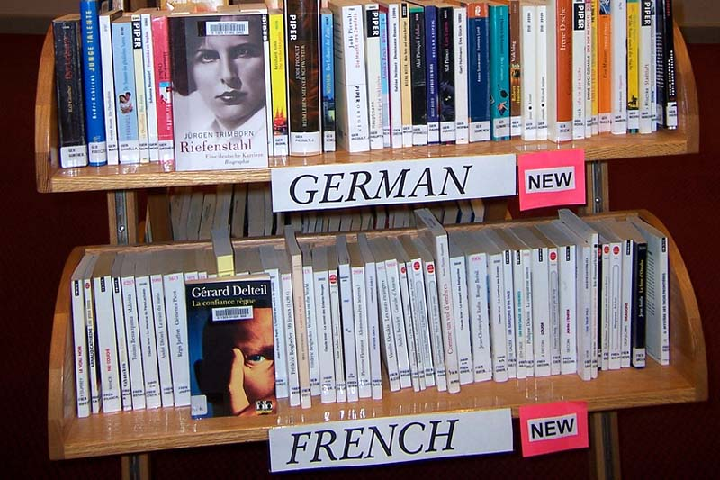
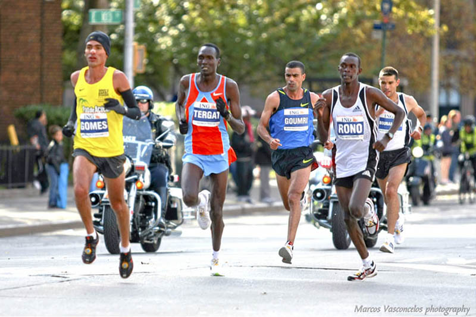
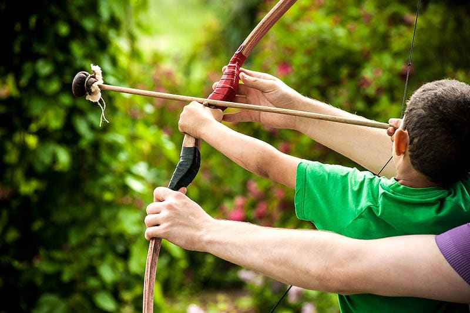
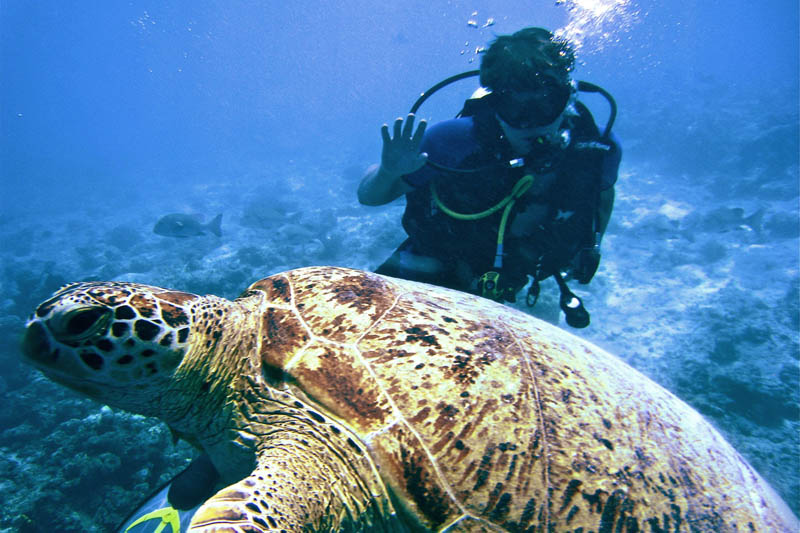

Bucket List
Travel All Around The World

Traveling fosters a medium to build human connections with one another by learning about culture, food, new sites, music, and the way people live their day to day lives in different parts of the world.
Learn a new language
Learning a new language is never easy but it’s so satisfying when you are able to converse with someone in a foreign language! I admire people who are multi-lingual.
Try a profession in a different field
It’s nice to do something different from what you have been doing, and it doesn’t have to involve quitting your current job
Run a marathon
A marathon is a long-distance race of 42.2 km (26.2 miles) long — definitely not an easy feat that requires training and hard work! Training and completing a marathon will develop you in your physical strength and endurance.
Take up a new sport
Sports are a great way to keep fit! Whether you’re an indoor or outdoor person, there is a sport for everyone.
Go scuba diving
With scuba diving and snorkeling, you have the opportunity to get up close and personal with the marine life — and see, feel, and experience the vast ocean in person.